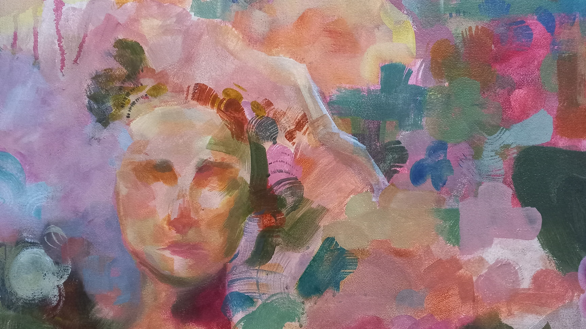
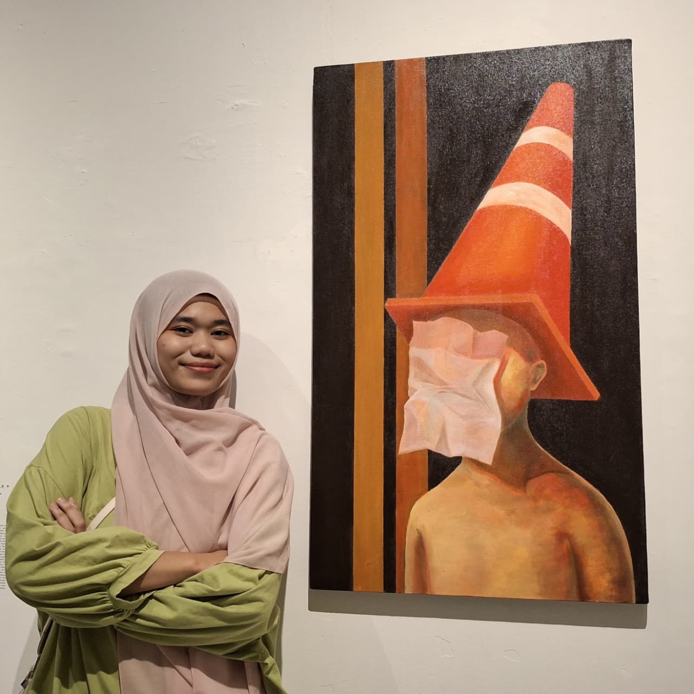
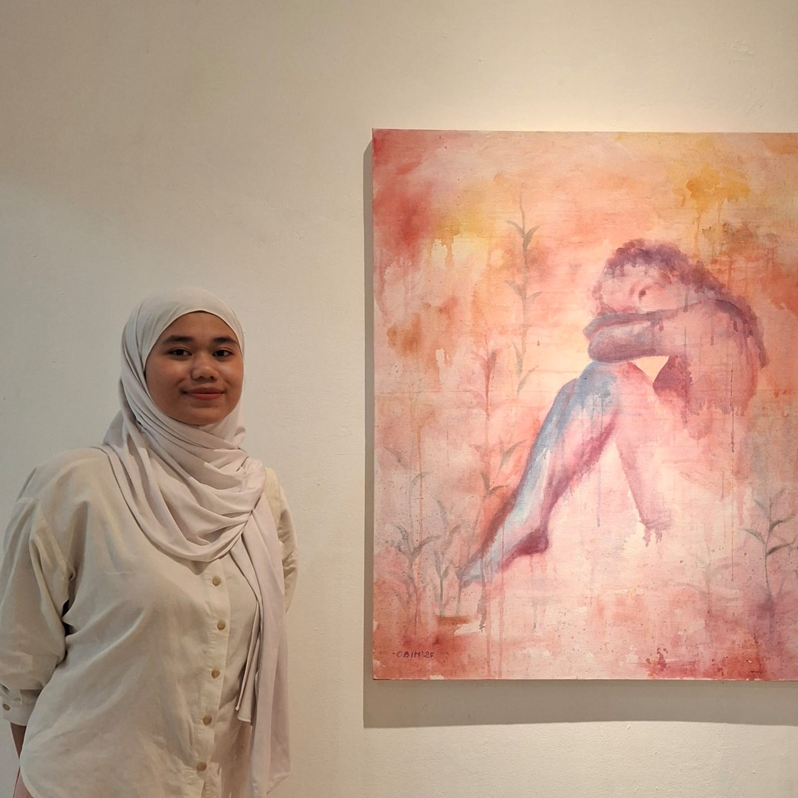

ubah keresahan menjadi karya.
berekspresi tanpa batas

welcome to my space
Karya-karya saya berpusat pada eksplorasi ruang pribadi dan emosi yang terpendam. Sebagai seseorang yang cenderung pendiam, saya sering merasa sulit untuk menyuarakan apa yang saya rasakan secara langsung. Melalui goresan kuas dan cat akrilik, saya akhirnya menemukan keberanian untuk mengekspresikan narasi batin yang telah lama tertahan.
Proses kreatif saya merupakan perpaduan antara refleksi diri dan riset visual. Saya memulai setiap karya dengan mencatat kecemasan serta pikiran-pikiran meresahkan yang saya alami, lalu mengubahnya menjadi sketsa emosional. Saya memilih akrilik karena sifatnya yang cepat kering, yang sangat mendukung gaya lukisan saya yang ekspresif dan cenderung kasar.
Inspirasi terbesar saya datang dari keinginan untuk berbagi emosi. Bersamaan dengan karya-karya ini, sebuah pertanyaan selalu muncul: "Apakah ada orang lain yang merasakan hal yang sama?"

- Mahasiswa Program Studi Seni Murni, Institut Seni Indonesia Yogyakarta 2023 - Sekarang
- Realistic Painting Exhibition Galery Fajar Sidiq, ISI Yogyakarta | Seniman | Mei 2023
- Who Am I: Journey of Becoming Jogja Galleri | Seniman, Konten Strategi | Februari 2025
- Pekan Rupa 4: Bintang Terang Bayangan Hilang Galeri R.J. Katamsi | Seniman | April 2026